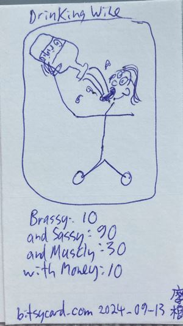

檸檬媽媽lemonmama.com2025 January Blog Posts - 2025年一月部落格文章
--------------- 推銷 Promoted: Personal Budgeting Book | Potato Chips | YOUR SPONSOR LINK HERE #0074 2025-01-06 1407 by Morgan Jassen on lemonmama.com#0074 - Free Speech Begets Free Speech
Here is the quote: “The price you pay for free speech is, free speech.” Said by persona Adam Sosnick, at the (56m. 29s.mark) When he and the PBD Podcast Squad are talking about getting banned from YouTube. PBD PODCAST episode #467 I love this quote. Because it is stated so concisely. And the speaker persona Sosnick, says it so well in this context in this podcast episode. In conclusion, free speech begets free speech. 推銷 Promoted: Personal Budgeting Book | Potato Chips | YOUR SPONSOR LINK HERE #0073 2025-01-01 1839 by Morgan Jassen on lemonmama.com#0073 - Five Bitsycards of Different Activities

In conclusion, these were five bitsycards of different activities. 推銷 Promoted: Personal Budgeting Book | Potato Chips | YOUR SPONSOR LINK HERE #0072 2025-01-01 0833 by Morgan Jassen on lemonmama.com
#0072 - Wall Graph of Your Life 001
I made thing. I made this budget chart called wall graph of your life. I learned thing. Two immediate notes, what I learned, doing this iteration of updating my wall graph of your life. 1.) It is a cash flow statement. 2.) I want to only include my own personal income (not others from shared accounts in my household). 2.b.) I want to include all expenses (including others from shared accounts in my household). For 2. and 3. above, my reasons are, this is what I have control over. I have control over my income not others', and I have no control over no one's spending from shared accounts so i should assume the shared accounts will all be spent and the shared bills will all be paid immediately or due immedidately. Side note: It's a cash flow statement. That makes me a bookkeeper. I'm a bookkeeper! Ok so now i did 6 months so far, november to april. Picture of wall graph here:In conclusion, This time updating my wall graph budget, I learned it's a cash flow statement. And I learned what income and expenses I want to include on the chart, and which I want to exclude from the chart. Promoted Product: your sponsor link here Promoted Product: your sponsor link here #00xx 2024-xx-xx xxxx by Morgan Jassen on lemonmama.com
Title Goes Here
Body text goes here... More Body text... More Body text... In conclusion, ... ~~~ Copyright © under a triple license to the individual author and to lemonmama.com and to MIT License.
{kind=link}
{kind=link}
{kind=link}